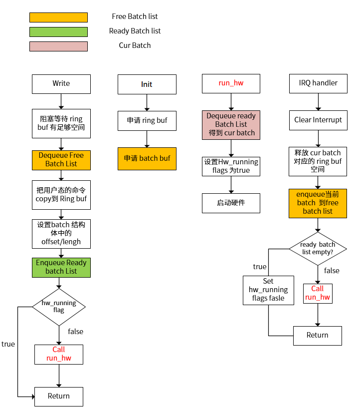

命令队列模式
命令队列模式，即 CMD queue 模式。GE 的完整功能需要依赖 MPP 中间件， 在 MPP 中间件中会把用户设置的参数信息转换成硬件可以识别的命令队列信息。
-
Task：GE 可以执行的最小任务单元，比如一次 blit 操作或一次矩形填充。
-
Batch：是一系列命令的集合，可以包含一个或者多个 task。
硬件以 batch 为单位执行，软件也必须以 batch 为单位向驱动写入命令。
-
Command Queue：软件可以向 Command Queue 写入多个 batch，硬件以 batch 为单位，按顺序执行。
注：GE Command Queue 是以 ring buffer 的方式实现，关于 ring buffer 的说明，参考具体产品的用户手册 > 多媒体 > Graphics Engine (GE) 章节。
CMD Queue 模式用户态可使用 ioctl 接口，包括以下操作：
- IOC_GE_VERSION
- IOC_GE_MODE
- IOC_GE_CMD_BUF_SIZE
- IOC_GE_SYNC
- IOC_GE_ADD_DMA_BUF
- IOC_GE_RM_DMA_BUF
初始化流程
GE 驱动的初始化过程见 aic_ge_probe() 函数，除了申请 regs、clk、reset 等资源外， 还申请了存储 Queue 需要的 ring buffer，以及存储 batch 信息的结构体。
struct aic_ge_batch {
struct list_head list;
int offset;
int length;
int client_id;
};#define MAX_BATCH_NUM 8
#define CMD_BUF_SIZE AIC_GE_CMDQ_BUF_LENGTH下图 ring buffer 中不同的颜色代表不同的 batch 对应的命令：
Batch 管理
-
空闲状态 (free)，batch 中没有可用信息在 free batch list 中。
-
Ready 状态，batch 中有等待执行的 cmd 信息在 ready list batch 中。
-
运行状态，当前硬件正在运行的 batch 既 不在 free list 中也不在 ready list 中。
Batch 状态变化流程如下：
-
在用户态的缓冲 buffer 中，用户组织好命令队列，以 batch 为单位，通过标准的 write 接口把命令 copy 到内核中的 buffer。
-
在内核中维护一个包含每个 batch 起始 offset 和 length 信息的链表，硬件以 batch 为单位执行命令队列。
-
如 batch 状态变化流程图所示，出现以下两种情况，需要启动硬件执行 batch 命令：
-
当应用调用了 write 命令写入当前 batch 信息，并且硬件处于空闲状态
-
在中断服务判断当前的 ready list batch 不为空，则从列表中 dequeue 一个 batch，送给硬件执行

图 4. batch 状态变化流程图 -
多进程支持
在 Luban 中，应用是在线程去调用 GE 的。为了确保不同线程添加的 batch 按照先进先出原则运行，系统需要对多线程进行有效管理。
当某个进程需要等待当前进程任务是否完成时，需要调用 IOC_GE_SYNC 命令，等待当前进程所有的任务完成即可，如上图所示。 当进程 2 调用 IOC_GE_SYNC 命令时，只需要等待 Batch5、batch3、batch2、batch0 完成即可，不用管后边加入的其他进程的 Batch6、Batch7
当某个线程需要使用 GE 时，IOC_GE_SYNC 的实现流程如下：
- 通过 open 接口创建当前 client 的上下文信息，并添加到 client
链表中。每个 client 都有一个唯一的识别
ID。
struct aic_ge_client { struct list_head list; struct list_head buf_list; struct mutex buf_lock; /* dma buf list lock */ int id; int batch_num; }; - 当前用户调用write 接口写入一个 batch 命令的时， 当前 batch 中的 client_id 会写入对应的 client 识别 id， 并且对应的 client 上下文中的 batch_num 引用计数会加 1。
- 硬件每执行完成一个 batch 产生一次中断，在中断服务程序中查询当前 batch 中的 client_id，并通过 client_id 从 client
链表中找到当前 client， 对应的 client 中的 batch_num 引用计数减 1。同时，通知所有打开了 GE
的应用：
wake_up_all(&data->wait); -
用户通过接口 IOC_GE_SYNC 等待任务完成，只需要等待当前 client 中的 batch_num 为 0 即可。
static int ge_client_sync(struct aic_ge_data *data, struct aic_ge_client *client) while (client->batch_num) { ret = wait_event_interruptible_timeout(data->wait, !client->batch_num, GE_TIMEOUT(4)); if (ret < 0) break; } return ret; }